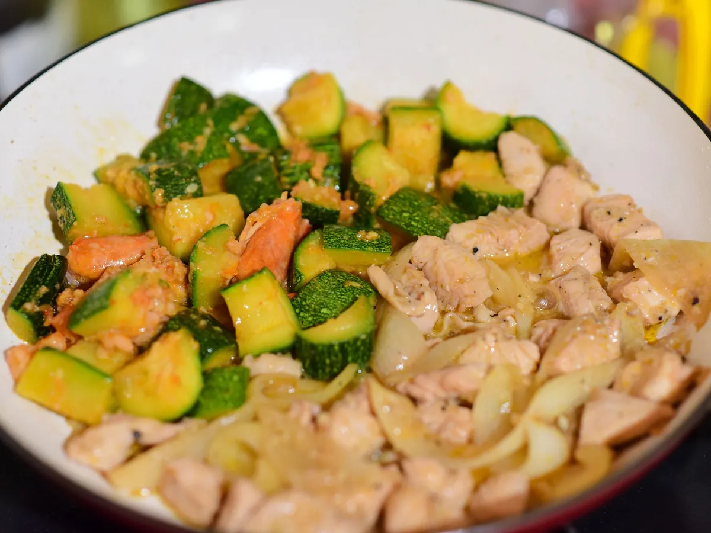
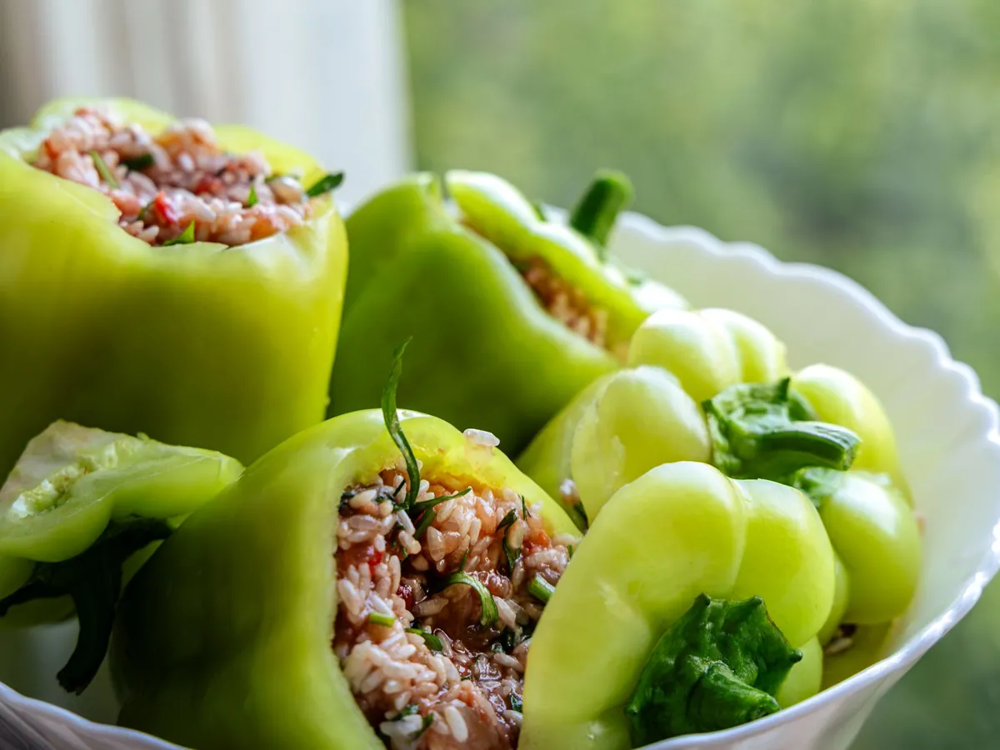
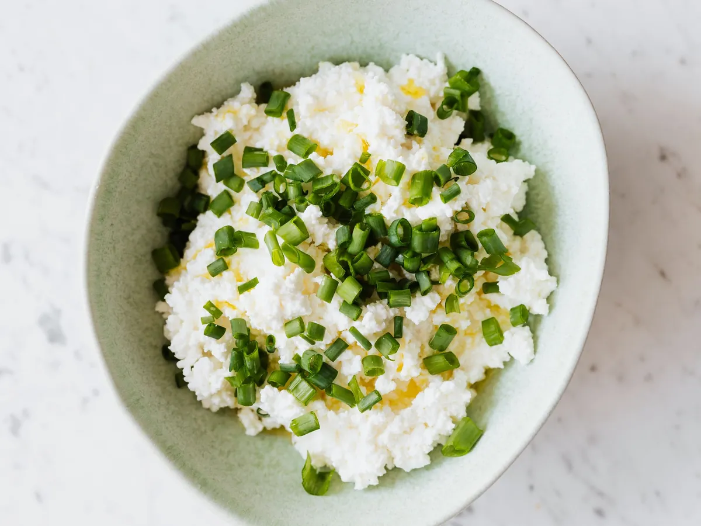

The recipe library
Find your next
small plate.
50 recipes with step-by-step instructions, protein per serving and storage notes. Every recipe includes a small-portion tip and a gentler swap.
All recipes
 SaladsGF
SaladsGFGrilled Chicken Avocado Salad
Three smaller bowls, creamy lemon dressing.
 Main Dishes
Main DishesLighter Chicken Alfredo
Creamy Alfredo, built on cottage cheese.
 Main DishesGF
Main DishesGFHoney Dijon Sheet Pan Salmon
Small glazed portions with a cool dill yogurt.
 SaladsVGF
SaladsVGFMediterranean Grain Bowl
Five smaller bowls, extra edamame for protein.
 SoupsVGF
SoupsVGFCreamy Tomato Basil Soup with White Beans
Silky tomato soup, thickened with white beans.
 Main DishesGF
Main DishesGFTurkey Taco Rice Bowls
Taco night in a small bowl.
 DessertsV
DessertsVNo-Bake Peanut Butter Protein Bites
Small no-bake bites, about 6 g protein each.
 DessertsVGF
DessertsVGFChocolate Greek Yogurt Mousse Cups
Cool, creamy chocolate cups with Greek yogurt.
 Beyond ToastV
Beyond ToastVCottage Cheese Pancakes
Blender pancakes with cottage cheese and oats.
 Beyond ToastVGF
Beyond ToastVGFOne-Pan Shakshuka
Two eggs, smoky tomato sauce, a spoon of yogurt.
 Beyond ToastV
Beyond ToastVBlueberry Vanilla Overnight Oats
Three small jars, made the night before.
 Beyond ToastV
Beyond ToastVAvocado Cottage Cheese Toast with Jammy Eggs
One slice, a creamy protein spread, a jammy egg.
 Beyond Toast
Beyond ToastFreezer-Friendly Breakfast Burritos
Twelve smaller burritos, lean sausage, extra eggs.
 Beyond ToastVGF
Beyond ToastVGFSpinach & Feta Mini Frittata
Six make-ahead wedges from one small pan.
 SoupsVGF
SoupsVGFRoasted Butternut Squash Soup with White Beans
Roasted squash soup, creamy without the cream.
 SoupsDF
SoupsDFLemon Chicken Orzo Soup
Lemony chicken soup, more chicken than pasta.
 Main Dishes
Main DishesCrispy Baked Chicken Bites
Golden, crunchy and baked, not fried.
 Main Dishes
Main DishesTurkey Meatballs in Tomato Sauce
Soft meatballs, simple sauce, freezer-friendly.
 SaladsGFDF
SaladsGFDFTuna & Chickpea Salad with Soft Eggs
Tuna, chickpeas and a soft egg with lemon.
 DessertsV
DessertsVBaked Cinnamon Apples with Greek Yogurt
Soft baked apples with a spoonful of yogurt.
 Beyond ToastV
Beyond ToastVGreek Yogurt Berry Parfait Jars
Cold, creamy and ready when you are.
 Beyond Toast
Beyond ToastSmoked Salmon Bagel Halves
A deli breakfast in a smaller portion.
 Beyond ToastV
Beyond ToastVCottage Cheese Scrambled Eggs
The creamiest eggs, with extra protein.
 Beyond ToastV
Beyond ToastVBerry Greek Yogurt Muffins
A small, soft muffin with a little extra protein.
 Beyond ToastVGF
Beyond ToastVGFStrawberry Cottage Cheese Bowl
Five minutes, 26 g of protein.
 SipsVGF
SipsVGFStrawberry Greek Yogurt Smoothie
Thick, cold and about 16 g protein a glass.
 SipsVGF
SipsVGFBanana Vanilla Protein Smoothie
A milkshake-style smoothie with real protein.
 SipsVGF
SipsVGFMixed Berry Protein Smoothie
Bright berries, 16 g protein, 5 g fiber.
 SipsVGF
SipsVGFGolden Milk Turmeric Latte
A soothing spiced milk with real protein.
 SipsDF
SipsDFGinger Egg Drop Soup
Silky egg ribbons in a gingery broth.
 SnacksGF
SnacksGFGreek Yogurt Deviled Eggs with Crispy Bacon
Creamy, savory and about 13 g protein.
 SnacksVGVDFGF
SnacksVGVDFGFWarm Garlic Sesame Edamame
A warm, salty bowl with real protein.
 SnacksVGF
SnacksVGFGreek Yogurt Hummus with Spiced Chickpeas
Extra-creamy hummus with a protein lift.
 SnacksVGF
SnacksVGFGreek Yogurt Tzatziki with Crunchy Vegetables
Cool, creamy and about 10 g protein.
 SnacksVGF
SnacksVGFFrozen Greek Yogurt Berry Bars
A cold, creamy bite with real protein.
 SoupsDFGF
SoupsDFGFCreamy Split Pea Soup
Smooth, filling and about 15 g protein.
 Soups
SoupsChicken Minestrone with Small Pasta
Vegetables, chicken and beans in every bowl.
 SoupsVGF
SoupsVGFSmoky Chickpea and Black Bean Chili
Thick, smoky and full of beans.
 SoupsDF
SoupsDFHearty Tomato White Bean Stew
Beans and sausage in a smoky tomato broth.
 SoupsDFGF
SoupsDFGFTurkish-Style Red Lentil Soup with Lemon
Silky, lemony and very easy to sip.

Main DishesDFChicken and Zucchini Stir-Fry
Quick, light and about 28 g protein.
 Main DishesDFGF
Main DishesDFGFLemon Herb Baked Cod with Rice
Mild, flaky and very easy to eat.

Main DishesGFTurkey and Rice Stuffed Peppers
One pepper is one small plate.
 Main DishesGF
Main DishesGFCreamy Garlic Shrimp with Zucchini Noodles
Creamy, garlicky and very light.
 Main DishesV
Main DishesVGreek Yogurt Egg Salad Lettuce Wraps
Soft, cool and easy to eat.
 SoupsDF
SoupsDFGentle Chicken Rice Congee with Soft Egg
Soft, warm and about 23 g protein.
 Side DishesVGF
Side DishesVGFCreamy Cottage Cheese Mashed Potatoes
Soft, creamy mash with a protein lift.

SnacksVGFSavory Herbed Cottage Cheese Bowl
Five minutes, no cooking, about 25 g protein.
 SnacksVGF
SnacksVGFBlueberry Greek Yogurt Chia Pudding
Make it tonight, eat it cold tomorrow.
 DessertsVGF
DessertsVGFCreamy Protein Rice Pudding with Berries
Soft, creamy and comforting, warm or cold.
No recipes match those filters yet.
Browse a collection
Hand-picked lists for the way you feel today.
Can't decide what to cook?
Let us pick a recipe for you. No scrolling required.

Free Starter Kit
Want a few recipes in one file?
Start with the free Starter Kit.
The GLP-1 Kitchen Starter Kit has three sample recipes from Nourished, a shopping checklist, and a worked example with a blank organizer for planning your own days.
Full-kit delivery opens soon. The kit page has a separate one-page planning sheet you can open now.